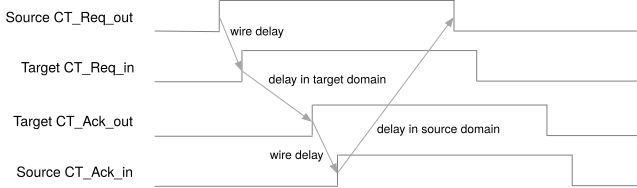

Cross-Trigger Network
The Cross-Trigger Network (CTN) implements inter-chiplet and on-chip cross-trigger routing per the Open Chiplet Cross Triggering (OCCT) specification. It combines a configurable set of Cross Trigger Ports (CTPs) facing the I/O pads with a Cross Trigger Matrix (CTM) that routes trigger pulses between all sources and sinks under AXI-Lite CSR control.
1. Overview
The CTN serves four purposes:
-
Die-to-die cross triggering — trigger pulses propagate between chiplets in a multi-die SiP through the CTP GPIO pads.
-
On-chip cross triggering — internal CLAs and other logic exchange trigger pulses without leaving the chiplet.
-
Unified management — a single AXI-Lite interface configures all CTP and CTM settings through a contiguous address window.
-
Clock stop coordination — the CTN OR-reduces CLA
xtrig_clk_stop_req_iinputs and combines the result with the JTAGjtag_clock_stopbit to produce the registeredstop_clks_ooutput.
2. Configuration Parameters
| Parameter | Range | Default | Description |
|---|---|---|---|
|
1–32 |
16 |
Number of external Cross Trigger Ports. |
|
0–32 |
10 |
Number of internal cross triggers. |
|
1–32 |
9 |
Number of clock-stop request inputs ( |
|
bit vector |
|
Operating mode per internal CTP: 0 = pulse/wire-OR, 1 = handshake/P2P. |
The DTP passes these counts through as XTRIG_NUM_CTP, XTRIG_NUM_INT_CT, and
XTRIG_NUM_CLK_STOP_REQ. The elaborated NUM_CTP + NUM_INT_CT must equal the
generated Cross-Trigger Matrix NUM_CT_SRC and NUM_CT_DST; see
Cross-Trigger Matrix.
3. Architecture
The following diagram is an example of a SiP with a heterogeneous cross triggering scheme utilizing both wire-OR and point-to-point cross triggering interfaces:

3.1. Cross Trigger Port (CTP)
OCAH supports a configurable number of CTPs, from 0 to 8, for a total number of up to 32 required GPIOs. These ports support both point-to-point and wire-OR cross trigger signaling modes.
Each CTP connects to four separate I/O pads:
-
CT_Req_out - The cross trigger request output signal. The CTP asserts this signal to transmit a cross trigger in both point-to-point and wire-OR modes. In point-to-point mode the request is held high until the receiver acknowledges the request. In wire-OR mode, this signal drives the output-enable port of the I/O pad for duration defined by a pulse stretching module, and the pad output is driven static-low. Also in wire-OR mode the I/O pad input signal must be inverted, as the pad signal itself is an open-drain active-low signal.
-
CT_Ack_in - The cross trigger acknowledge input signal. Exclusive to point-to-point mode. The cross trigger receiver asserts this signal when it acknowledges the CTP’s cross trigger request.
-
CT_Req_in - The cross trigger request input signal. Exclusive to point-to-point mode. This is the external cross trigger request received by the CTP.
-
CT_Ack_out - The cross trigger acknowledge output signal. Exclusive to point-to-point mode. The CTP asserts this signal after receiving a cross trigger request, and de-asserts this signal after the cross trigger request is released.
When a GPIO pad is configured for cross triggering, the I/O pad assumes the role of one of these four cross trigger signals, and the pad controls and I/O data signals are connected to the associated CTP.
The following diagram illustrates the logical structure of a CTP module:

Signal names, directions, and pad controls are listed in the CTP Signal Interface.
The register interface for each CTP module is described in the CTN Memory Map section below.
3.1.1. Wire-OR Mode
Wire-OR mode is a 1-wire cross trigger signaling scheme compatible with many existing cross triggering implementations. This scheme is very resource efficient, as it only requires a single pin per chiplet connected to the network. However, the performance of the network decreases as the number of connected chiplets increase. Also, the duration of the cross trigger pulse must be pre-arranged across all connected chiplets.
Each chiplet has an open-drain I/O connected to a single shared wire. Any connected chiplet may pull this signal low to assert a cross trigger. Depending on the electrical requirements, one or more internal pad pull-ups or external keepers ensure the cross trigger request signal remains high when no cross trigger is asserted. To ensure no connected chiplet misses a cross trigger pulse, all chiplets transmitting a trigger pulse must stretch the pulse a mutually agreed upon length of time.
Note that in wire-OR mode the CT_Req_out signal is connected to an open-drain configured I/O pad. For I/O pads that do have explicit open-drain control, the request data signal should connect to the output-enable control pin of the I/O pad, and the output data signal of the I/O pin should be driven statically low.
The following diagram illustrates the logical behavior of the CTPs when configured in wire-OR mode:

Any number of chiplets may have their CT_Req_out pads interconnected as shown in the following example diagram:

3.1.2. Point-to-Point Mode
Point-to-point mode utilizes a four-phase handshaking scheme to synchronize a cross trigger quickly and reliably between two chiplets without pulse stretching. While this scheme is simple and fast, it requires a dedicated CTP for each chiplet-to-chiplet interconnection, and each CTP requires four I/O pads for bi-directional communication, or two pads for unidirectional communication. All output pads are configured for push-pull operation.
The following diagram illustrates the logical behavior of the CTPs when configured in point-to-point mode:

Any two chiplets may have their four cross trigger pads cross-coupled as shown in the following example diagram:

On the sender side, the receiver’s CT_Ack_out is connected to the sender’s CT_Ack_in pad. CT_Req_out asserts whenever CT_Src asserts. CT_Req_out will then remain asserted until CT_Ack_in asserts.
On the receiver side, the sender’s CT_Req_out is connected to the receiver’s CT_Req_in pad. On any positive edge of CT_Req_in, the receiver generates a pulse on CT_Dst and asserts CT_Ack_out. Deassertion proceeds in exactly the same sequence.
The timing of the request/acknowledge handshake is shown in the diagram below:

3.2. Cross Trigger Matrix (CTM)
The CTM is a crossbar that aggregates and statically routes cross trigger pulses between various sources and sinks. Typical connections to the CTM include Core Logic Analyzers (CLAs) and CTPs, including other miscellaneous devices. The CTM is compatible with CTPs operating in either of the two signaling modes, point-to-point or wire-OR. Typically, each device or logic module connected to the CTM will act as both a source and a sink for cross trigger pulses.

The CTM is programmed at runtime via firmware or debug transactions. Proper configuration of the CTMs in each chiplet will minimize trigger latency and prevent loops in the SiP cross trigger network. Configuration is accomplished via CSRs. The CTM register interface is described in the CTN Memory Map section below.
3.3. Address Map
The CTN provides a unified CSR address space accessed via a single AXI-Lite
subordinate port. An internal AXI-Lite crossbar (axi_lite_xbar) routes
transactions to the CTM and external CTPs based on address decoding.
| Component | Address Range | Size | Description |
|---|---|---|---|
CTM |
0x0000 - 0x01FF |
512 bytes |
Cross Trigger Matrix configuration registers (26 sources × 2 config registers) |
CTP[0] |
0x0200 - 0x020F |
16 bytes |
External CTP 0 configuration |
CTP[1] |
0x0210 - 0x021F |
16 bytes |
External CTP 1 configuration |
… |
… |
… |
… |
CTP[15] |
0x02F0 - 0x02FF |
16 bytes |
External CTP 15 configuration |
Internal CTPs |
No CSR address |
N/A |
Configured via build-time parameters only |
The crossbar is configured with MaxMstTrans=1 and MaxSlvTrans=1, serializing
all CSR accesses. This simplification reduces arbitration logic at the cost of
concurrent access capability.
3.4. Internal vs External CTP Architecture
The CTN instantiates 16 external CTPs using the full cross_trigger_port module
with CSR interface, and 10 internal CTPs using only the
cross_trigger_port_core module without registers.
| Aspect | External CTP | Internal CTP |
|---|---|---|
Module |
|
|
CSR Interface |
16-byte AXI-Lite address space |
None (build-time parameters) |
GPIO Interface |
4-pad interface to die I/O |
Logical signals to internal CLAs |
Configuration |
Runtime via CSRs (mode, invert, stretch_mult, reset) |
Build-time via |
Index Range |
ctm_ct_src/dst[0:15] |
ctm_ct_src/dst[16:25] |
Signal Mapping |
Standard GPIO pad controls |
Repurposed GPIO signals (see table below) |
3.4.1. Internal CTP Signal Remapping
Internal CTPs reuse the cross_trigger_port_core GPIO interface but connect to
logical signals rather than physical pads. The INT_CT_MODE parameter bits are
inverted before use: MODE_WIRE_OR = ~INT_CT_MODE[i]. This means
INT_CT_MODE[i]=0 selects Point-to-Point mode, while INT_CT_MODE[i]=1 selects
Wire-OR mode.
Wire-OR Mode (INT_CT_MODE[i]=1, internal MODE_WIRE_OR=0):
| CTP Core Signal | Internal Connection |
|---|---|
|
→ |
|
← |
All other signals |
Unused (tied to constants) |
Point-to-Point Mode (INT_CT_MODE[i]=0, internal MODE_WIRE_OR=1):
| CTP Core Signal | Internal Connection |
|---|---|
|
→ |
|
← |
|
← |
|
→ |
This remapping allows internal CTPs to operate in either mode without physical GPIO pads, enabling on-chip cross-triggering between CLAs and the external cross-trigger network.
3.5. Signal Flow
External Cross Trigger Flow
-
Outgoing Trigger: CTM ct_src → CTP ct_src_i → GPIO pads
-
Incoming Trigger: GPIO pads → CTP ct_dst_o → CTM ct_dst_i
Internal Cross Trigger Flow
-
To Internal Sink: CTM ct_src → Internal CTP → ctm_src_req_o
-
From Internal Source: ctm_dst_req_i → Internal CTP → CTM ct_dst
3.6. Clock Stop Control
The ctn_clock_stop_ctrl module aggregates clock stop requests from multiple
sources using a two-stage OR-tree architecture. The module separates CLA-only
status from the combined functional halt signal to support independent JTAG
visibility and chiplet clock gating control.
| Signal | Width | Description |
|---|---|---|
|
NUM_CLK_STOP_REQ (default=9) |
Clock stop requests from individual CLAs or other on-chip sources |
|
1 |
Direct clock stop from JTAG DEBUG_CONTROL register |
|
1 |
CLA requests only (OR-reduction of |
|
1 |
Registered functional halt (JTAG OR CLA requests), drives chiplet clock gating |
The aggregation logic operates as follows:
-
CLA OR-Tree: All CLA request inputs are OR-reduced combinationally:
cla_clk_stop_req = |clk_stop_req_i -
Combined Request: JTAG and CLA requests are OR-combined:
clk_stop_req_combined = jtag_clock_stop_i | cla_clk_stop_req -
Output Registration: The combined request is registered on the rising edge of
clk_i:stop_clks_o ⇐ clk_stop_req_combined
The registered stop_clks_o output prevents glitches from propagating to the
chiplet’s functional clock gating logic. The combinatorial cla_clock_stop_o
output provides immediate visibility of CLA activity to the JTAG interface,
allowing debuggers to distinguish between JTAG-initiated and CLA-initiated clock
stops.
3.7. Port Indexing
CTM ports are indexed as follows:
| Port Index | Description |
|---|---|
0 to N-1 |
External CTPs (NUM_CTP) |
N to N+M-1 |
Internal CTPs (NUM_INT_CT) |
Where N = NUM_CTP and M = NUM_INT_CT. This indexing is used for CTM ct_dst_i and ct_src_o port assignment and CTM routing configuration registers.
4. Interface
4.1. Cross Trigger Port (CTP)
The table below lists the CTP signals and their mode-dependent behavior. For the module diagram and signalling modes, see CTN Architecture.
| Name | Direction | Description |
|---|---|---|
mode |
input |
Indicates the operational mode of the CTP. 0 for wire-OR and 1 for peer-to-peer. The value at reset should be 0. |
ct_src |
input |
Core-side cross trigger input pulse. |
ct_dst |
output |
Core-side cross trigger output pulse. |
busy |
output |
Optional signal indicating that an outgoing cross trigger pulse transfer is in progress. |
reset |
input |
Resets the outgoing peer-to-peer handshake logic. |
stretch_mult[N-1:0] |
input |
Configures the pulse duration of the pulse stretcher module for wire-OR mode. |
ct_req_out_dout_en |
output |
Enables the output driver for the CT_Req_out pad. In wire-OR mode this signal is enabled by a cross trigger pulse from the pulse stretcher. In peer-to-peer mode it is always enabled. |
ct_req_out_din_en |
output |
Enables the input buffer for the CT_Req_out pad. In wire-OR mode this signal is enabled and in peer-to-peer mode it is disabled. |
ct_req_out_dout |
output |
The output data to drive on the CT_Req_out pad. In peer-to-peer mode the pulse capture latch controls this signal. In wire-OR mode it is held static-low. |
ct_req_out_din |
input |
The input data that is driven on the CT_Req_out pad. In wire-OR mode this signal triggers a pulse on ct_dst after synchronization. In peer-to-peer mode it is unused. |
ct_req_in_din_en |
output |
Enables the input buffer for the CT_Req_in pad. In peer-to-peer mode this signal is enabled and in wire-OR mode it is disabled. |
ct_req_in_din |
input |
The input data that is driven on the CT_Req_in pad. In peer-to-peer mode this signal triggers a pulse on ct_dst after synchronization. In wire-OR mode it is unused. |
ct_ack_in_din_en |
output |
Enables the input buffer for the CT_Ack_in pad. In peer-to-peer mode this signal is enabled and in wire-OR mode it is disabled. |
ct_ack_in_din |
input |
The input data that is driven on the CT_Ack_in pad. This signal clears the cross trigger request output in peer-to-peer mode. In wire-OR mode it is unused. |
ct_ack_out_dout_en |
output |
Enables the output driver for the CT_Ack_out pad. In peer-to-peer mode this signal is enabled and in wire-OR mode it is disabled. |
ct_ack_out_dout |
output |
The output data to drive on the CT_Ack_out pad. In peer-to-peer mode the ct_req_in pulse synchronizer controls this signal. In wire-OR mode it is unused. |
4.2. Cross Trigger Matrix (CTM)
The CTM has the following data ports and logical structure:
-
CT_Src[N-1:0] - Cross trigger pulse output signals from the CTM to CLAs, CTPs, or other cross trigger sinking devices, where N is the number of these cross trigger sinks.
-
CT_Dst[M-1:0] - Cross trigger pulse input signals to the CTM from CLAs, CTPs, or other cross trigger generating devices, where M is the number of these cross trigger sources.
4.3. Cross Trigger Network Module Interface
The top-level cross_trigger_network module has the following interface:
Parameters
-
NUM_CTP,NUM_INT_CT,NUM_CLK_STOP_REQ- External CTP, internal CT, and clock-stop request counts (defaults 16, 10, 9) -
INT_CT_MODE- Per-bit mode selection for internal CTPs (0 = Wire-OR, 1 = P2P) -
axil_req_t,axil_resp_t- AXI-Lite request/response types
Ports
// Global
input logic clk_i
input logic rst_ni
// AXI-Lite CSR Interface
input axil_req_t axil_req_i
output axil_resp_t axil_resp_o
// Clock Stop Interface
input logic [NUM_CLK_STOP_REQ-1:0] clk_stop_req_i
input logic jtag_clock_stop_i
output logic stop_clks_o
output logic cla_clock_stop_o
// Internal Cross Trigger Interface (to CLAs)
output logic [NUM_INT_CT-1:0] ctm_src_req_o
input logic [NUM_INT_CT-1:0] ctm_src_ack_i
input logic [NUM_INT_CT-1:0] ctm_dst_req_i
output logic [NUM_INT_CT-1:0] ctm_dst_ack_o
// External CTP GPIO Interface (per CTP)
// CT_Req_out, CT_Req_in, CT_Ack_in, CT_Ack_out signals4.4. Dependencies
The CTN depends on the following components:
-
hw/ip/cross_trigger/cross_trigger_port- Cross Trigger Port IP -
hw/ip/cross_trigger/cross_trigger_matrix- Cross Trigger Matrix IP -
vendor/pulp-platform/axi- AXI infrastructure (axi_lite_xbar)
5. Memory Map
The Cross Trigger Network combines the Cross Trigger Matrix (CTM) and Cross Trigger Port (CTP) registers into a unified address space. Its generated map keeps the CTP instance count and stride with the allocated apertures:
| Base Address | End Address | Size | Decoded Extent | Unit | Instances | Stride | Description |
|---|---|---|---|---|---|---|---|
0x00000000 |
0x000001FF |
512 B |
208 B |
Cross Trigger Matrix Address Map |
1 instance |
- |
Configuration registers for the cross trigger matrix |
0x00000200 |
0x000002FF |
256 B |
252 B |
Cross Trigger Port Address Map |
16 instances |
16 B |
Configuration and status registers for the cross trigger port |
The CTN adds no CTN-specific registers; it decodes the AXI-Lite CSR interface onto the CTM and CTP blocks it instantiates. The composite SystemRDL top is the common source for these addresses and for the generated RTL constants.
5.1. Cross Trigger Matrix Registers
Address Map: cross_trigger_matrix
Register Arrays:
- CT_SRC[26].CONFIG_0: 26 registers, base 0x0, stride 0x8
Register List:
| Address | Name | Access | Description |
|---|---|---|---|
| 0x0 - 0xC8 | CT_SRC[26].CONFIG_0 | RW | Cross Trigger Source Configuration - CT_Dst select mask |
Register Details:
CT_SRC[26].CONFIG_0
| Bits | Field | Access | Reset | Description |
|---|---|---|---|---|
| 31:26 | Reserved | - | - | Reserved |
| 25:0 | CT_DST_SELECT | RW | 0x0 | Selects the CT_Dst port(s) to forward on the CT_Src output at this array index. Each bit corresponds to one CT_Dst port, from CT_Dst[0] at bit 0 upwards. Multiple ports may be selected as a trigger source. All selected source ports are then OR'd together to produce the CT_Src output. Set this register to all-zero to disable that output. |
5.2. Cross Trigger Port Registers
Each CTP window repeats the following register layout.
Address Map: cross_trigger_port
Register List:
| Address | Name | Access | Description |
|---|---|---|---|
| 0x0 | CONFIG | RW | Cross Trigger Port Configuration |
| 0x4 | STATUS | R | Cross Trigger Port Status |
| 0x8 | STRETCH_MULT | RW | Pulse Stretch Multiplier |
Register Details:
CONFIG
| Bits | Field | Access | Reset | Description |
|---|---|---|---|---|
| 31:3 | Reserved | - | - | Reserved |
| 2 | RESET | RW | 0x0 | Forcefully clears the request output signal of the point-to-point handshake logic. Primarily for debug and recovery of handshake deadlock. |
| 1 | INVERT | RW | 0x0 | Inverts the sense of the incoming and outgoing GPIO signals. 0 - No inversion. Wire-OR mode uses active-low signaling with active or passive pull-ups. Point-to-point mode uses active-high signaling. 1 - All inputs and outputs of I/Os are inverted. Wire-OR mode uses active-high signaling with active or passive pull-downs. Point-to-point mode uses active-low signaling. |
| 0 | MODE | RW | 0x0 | Selects the operating mode of the CTP. 0 - Wire-OR, 1 - Point-to-Point |
STATUS
| Bits | Field | Access | Reset | Description |
|---|---|---|---|---|
| 31:8 | Reserved | - | - | Reserved |
| 7 | ACK_OUT | R | 0x0 | Readout of the current CT_Ack_out signal value. |
| 6 | REQ_IN | R | 0x0 | Readout of the current synchronized CT_Req_in signal value. |
| 5 | ACK_IN | R | 0x0 | Readout of the current synchronized CT_Ack_in signal value. |
| 4 | REQ_OUT | R | 0x0 | Readout of the current CT_Req_out signal value. |
| 3:1 | Reserved | - | - | Reserved |
| 0 | BUSY | R | 0x0 | Indicates whether a pulse assertion or handshake is currently in progress. 0 - Pulse or handshake is not in progress, 1 - Pulse or handshake is currently in progress |
STRETCH_MULT
| Bits | Field | Access | Reset | Description |
|---|---|---|---|---|
| 31:16 | Reserved | - | - | Reserved |
| 15:0 | STRETCH_MULT | RW | 0x0 | The number of clock cycles a core-side cross trigger pulse is stretched on the GPIO pin when in wire-OR mode. Whenever a core-side pulse is received, the generated GPIO pulse has a width of (STRETCH_MULT+1) clock cycles. |
5.3. Composite Network Registers
This map gives the CTM and CTP register offsets within the generated CTN composition. The individual block maps above give offsets within each block.
Address Map: cross_trigger_network
Register Arrays:
- CT_SRC[26].CONFIG_0: 26 registers, base 0x0, stride 0x8
Register List:
| Address | Name | Access | Description |
|---|---|---|---|
| 0x0 - 0xC8 | CT_SRC[26].CONFIG_0 | RW | Cross Trigger Source Configuration - CT_Dst select mask |
| 0x200 | CONFIG | RW | Cross Trigger Port Configuration |
| 0x204 | STATUS | R | Cross Trigger Port Status |
| 0x208 | STRETCH_MULT | RW | Pulse Stretch Multiplier |
Register Details:
CT_SRC[26].CONFIG_0
| Bits | Field | Access | Reset | Description |
|---|---|---|---|---|
| 31:26 | Reserved | - | - | Reserved |
| 25:0 | CT_DST_SELECT | RW | 0x0 | Selects the CT_Dst port(s) to forward on the CT_Src output at this array index. Each bit corresponds to one CT_Dst port, from CT_Dst[0] at bit 0 upwards. Multiple ports may be selected as a trigger source. All selected source ports are then OR'd together to produce the CT_Src output. Set this register to all-zero to disable that output. |
CONFIG
| Bits | Field | Access | Reset | Description |
|---|---|---|---|---|
| 31:3 | Reserved | - | - | Reserved |
| 2 | RESET | RW | 0x0 | Forcefully clears the request output signal of the point-to-point handshake logic. Primarily for debug and recovery of handshake deadlock. |
| 1 | INVERT | RW | 0x0 | Inverts the sense of the incoming and outgoing GPIO signals. 0 - No inversion. Wire-OR mode uses active-low signaling with active or passive pull-ups. Point-to-point mode uses active-high signaling. 1 - All inputs and outputs of I/Os are inverted. Wire-OR mode uses active-high signaling with active or passive pull-downs. Point-to-point mode uses active-low signaling. |
| 0 | MODE | RW | 0x0 | Selects the operating mode of the CTP. 0 - Wire-OR, 1 - Point-to-Point |
STATUS
| Bits | Field | Access | Reset | Description |
|---|---|---|---|---|
| 31:8 | Reserved | - | - | Reserved |
| 7 | ACK_OUT | R | 0x0 | Readout of the current CT_Ack_out signal value. |
| 6 | REQ_IN | R | 0x0 | Readout of the current synchronized CT_Req_in signal value. |
| 5 | ACK_IN | R | 0x0 | Readout of the current synchronized CT_Ack_in signal value. |
| 4 | REQ_OUT | R | 0x0 | Readout of the current CT_Req_out signal value. |
| 3:1 | Reserved | - | - | Reserved |
| 0 | BUSY | R | 0x0 | Indicates whether a pulse assertion or handshake is currently in progress. 0 - Pulse or handshake is not in progress, 1 - Pulse or handshake is currently in progress |
STRETCH_MULT
| Bits | Field | Access | Reset | Description |
|---|---|---|---|---|
| 31:16 | Reserved | - | - | Reserved |
| 15:0 | STRETCH_MULT | RW | 0x0 | The number of clock cycles a core-side cross trigger pulse is stretched on the GPIO pin when in wire-OR mode. Whenever a core-side pulse is received, the generated GPIO pulse has a width of (STRETCH_MULT+1) clock cycles. |